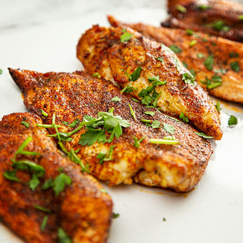

Baked Chicken Recipe

Description
If there is one recipe that every home cook should know, it's this baked chicken recipe. All you need is chicken, olive oil, salt, and pepper (and maybe some stock or white wine for gravy).
We usually buy whole chickens and either cut them up ourselves or have the butcher do it for us. It's cheaper that way, and we get giblets for gravy. You can do that or just use a package of whatever chicken parts you like—make baked chicken breasts for white meat, and baked chicken thighs and legs for dark.
Ingredients
- 1 (3 to 4-pound) chicken, cut into 8 parts (2 breasts, 2 thighs, 2 legs, 2 wings), excluding the back
- Extra virgin olive oil
- Kosher salt
- Freshly ground black pepper
- 1/2 cup low sodium chicken stock or white wine for the gravy, optional
Steps
- Trim the chicken pieces of excess fat. Pat the chicken pieces dry with a paper towel. Sprinkle all sides with salt. Let the chicken pieces sit for 15 to 20 minutes to take the chill off.
- Preheat the oven to 400°F (205°C).
- Pat the chicken pieces dry with a paper towel. Rub olive oil all over the chicken pieces and on the bottom of the roasting pan.
- Sprinkle the chicken pieces all over with black pepper and a little more salt.
- Arrange the chicken pieces in the pan, so that all the pieces are skin-side up, and the largest pieces (the breasts) are in the center of the pan.
- Don't crowd the pan. Allow room in between the pieces for the heat to circulate.
- Bake (uncovered) in the oven for 30 minutes at 400°F (205°C). This initial high heat will help brown the chicken.
- Then, lower the heat to 350°F (175°C) and bake for an additional 10 to 30 minutes until the juices run clear (not pink) when poked with a sharp knife and the internal temperature of the chicken breasts is 165°F (74°C), and of the thighs is 170°F (77°C) when tested with a meat thermometer.
- If the chicken isn't browning well enough, place the chicken under the broiler for the last 5 minutes of cooking until browned sufficiently.
- Remove from oven and transfer the chicken to a serving dish. Tent with aluminum foil and let rest for 5 to 10 minutes before serving.
- If you would like to make gravy with the drippings from the chicken, place the roasting pan with all its drippings on the stove-top and set the burner to medium heat.
- Use a metal spatula to scrape up the stuck drippings from the bottom of the pan. When the pan is hot, pour in some white wine or chicken stock to help loosen the drippings from the pan.
- Transfer the drippings and stock/wine mixture to a saucepan and heat on medium-high until reduced to your desired thickness.
- If you want the gravy even thicker, you can make a slurry with a little cornstarch or flour (a teaspoon) and water (1/4 cup), and add that to the gravy while it cooks.
- Serve with steamed rice, mashed potatoes, or Spanish rice.